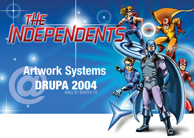

Twee weken DRUPA
woensdag 5 mei 2004 | Persoonlijk
Wanneer dit berichtje hier verschijnt, zit ik in de auto op weg naar Düsseldorf, Duitsland. Ik zal er de komende 15 dagen fungeren als cocktail-shaker (nouja…) op de stand van mijn werkgever tijdens ‘de moeder van alle beurzen’ in de grafische wereld: DRUPA, editie 2004. De naoorlogse olympiade strekt zich deze keer uit over maar liefst 17 expohallen (160.000 vierkante meter!), waar onder andere reuzen als Manroland en Heidelberg de verbeelding van een half miljoen bezoekers zullen tarten door er hun torenhoge drukpersen op te trekken.
Mijn grote werk is zo goed als achter de rug nog voor de beurs begint. Als marketing ‘creative’ stond ik in voor de negen paletten nieuwe brochures die vorige week werden geleverd, een dubbele internationale mailing, een flinke dosis spam, splashscreens, iconen, advertenties, powerpoint-presentaties, levensgrote belettering en posters van de Artwork Systems superheroes en nog eens duizend en één kleinere prutsen.
Onze stand is te vinden aan de ingang van Hall 9, tussen vele andere softwaremakers zoals Creo, Agfa, Enfocus, Adobe, Apple etc… Het Artwork Systems team bestaat uit meer dan 70 mannen en vrouwen, samen goed voor ongeveer drieduizend demo’s van onze producten. Iedereen verblijft gedurende twee volle weken verspreid over drie hotels in de wijde omtrek rond Düsseldorf. Ik mag mijn intrek nemen in het Turmhotel in Solingen, waar het Artwork team alle 40 kamers in beslag heeft genomen. We gaan de arme kok eens Belgische frieten leren bakken ;-)
Ik vermoed dat een gemiddeld dagje tijdens de beurs er zo zal uitzien: opstaan rond half acht, carpoolen naar Düsseldorf, van 10 uur ‘s morgens tot 6 uur in de namiddag op de stand, terug naar het hotel, eten, duschen en dan de stad in met onze bende. Elke avond is er naar het schijnt wel een ‘grafische fuif’ in de omtrek die we onveilig kunnen maken. Maar viertien dagen feesten is er misschien wel iets over. Daarom hebben we een extra projector en een iBookje voorzien om af en toe een filmpje af te spelen.
Tot binnenkort (misschien laat ik nog wel ‘live’ iets weten)!

mulvi op 5 mei 2004
Ik zal je heel hard missen terwijl je cocktails staat te shaken. Dank u voor uw verassing die je voor mij had klaargestoomd. Ik was ontroerd… Dikke knuffel.